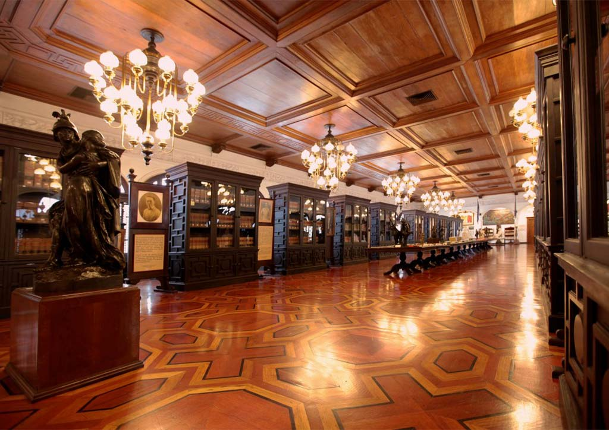

Malacañang Palace is one of the most iconic and historically significant landmarks in the Philippines, and is the official residence of the President of the Philippines. It is located in the heart of Manila, along the Pasig River, and has served as the center of government and political power in the country for over a century. Visitors to Malacañang Palace can take a guided tour of the palace grounds and explore its rich history and culture. The tour includes a visit to the Presidential Museum and Library, which features a collection of art, historical artifacts, and memorabilia related to the Philippine presidency. One of the highlights of the tour is the chance to see the historic rooms of the palace, including the State Dining Room, the Music Room, and the Library. Visitors can also see the Presidential Office and the Bahay Pangarap, which is the President's official residence. Aside from its historical and cultural significance, Malacañang Palace also serves as a venue for official state functions and events. It is also a popular location for photo opportunities, especially with its picturesque gardens and stunning architecture. Overall, Malacañang Palace is an important tourist spot that offers visitors a glimpse into the history and culture of the Philippines. Its grandeur and beauty make it a must-visit destination for anyone interested in Philippine politics, art, and architecture.
Malacañang Palace is an important tourist spot for several reasons:
Historical Significance: Malacañang Palace is a significant historical landmark and has served as the seat of political power in the Philippines for over a century. Visiting the palace is an opportunity to learn about the country's political history and the role of the presidency in shaping the Philippines.
Cultural Heritage: The palace's architecture and design reflect a mix of Filipino, Spanish, and American influences, making it a testament to the country's cultural heritage. The Presidential Museum and Library inside the palace also showcases art, artifacts, and memorabilia that reflect the country's rich culture.
Iconic Landmark: Malacañang Palace is one of the most iconic landmarks in the Philippines and is recognized worldwide as a symbol of Philippine politics and government. Its grandeur and beauty make it a popular destination for tourists and locals alike.
Official Functions and Events: The palace is also a venue for official state functions and events, including diplomatic receptions, official visits, and state banquets. Visitors may even have the chance to witness an official event during their visit.
Photo Opportunities: Malacañang Palace's picturesque gardens and stunning architecture provide visitors with many photo opportunities. It is a great place to capture memories and take home stunning photographs.
Overall, Malacañang Palace is an important tourist spot that offers visitors a chance to learn about the country's political history and cultural heritage. Its iconic status, official functions, and beautiful surroundings make it a must-visit destination for anyone interested in Philippine politics, culture, and architecture.